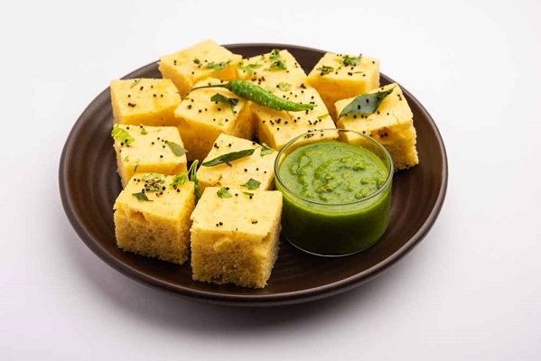

ખમણ ઢોકળા એ ચણાના લોટ અને મસાલા વડે બનતો ઉકાળો નાસ્તો છે. આ વિગતવાર પોસ્ટ તમને એકદમ સોફ્ટ, ફ્લફી, સ્પૉન્ગી અને સ્વાદિષ્ટ ખમણ ઢોકળા બનાવવામાં મદદ કરશે. પરંપરાગત રીતે, ખમણ અને ઢોકળા એ ગુજરાતી ભોજનમાંથી 2 અલગ અલગ વાનગીઓ છે. ખમણ એ બંગાળના ચણા અથવા ચણાના લોટથી બનેલી વાનગી છે. જ્યારે ઢોકળા આથેલા ચોખા અને મસૂરની દાળનો ઉપયોગ કરીને બનાવવામાં આવે છે.
- 1 કપ = 240ML
- 1 કપ બેસન (125 ગ્રામ – ચણાનો લોટ)
- 1 ટેબલસ્પૂન ઝીણી સોજી (10 ગ્રામ ઝીણી સુજી/રવા)
- ¼ ચમચી હળદર
- 1 ચમચી ખાંડ
- ⅓ ચમચી મીઠું
- 1 પીરસવાનો મોટો ચમચો લીંબુનો રસ (અથવા ચૂનોનો રસ અથવા ⅓ ચમચી કુદરતી સાઇટ્રિક એસિડ)
- 1 ચમચી તેલ
- ½ ચમચી આદુની પેસ્ટ
- 1 લીલું મરચું (પેસ્ટ)
- ½ કપ પાણી
- ¼ કપ પાણી (+ 1 ચમચી વધુ) (નોંધ વાંચો)
- ¾ ટીસ્પૂન ઈનો (સ્વાદ વિનાનું ફળ મીઠું)
- 1 ચમચી પાણી (ENO સક્રિય કરવા માટે)
- 1 ચમચી તેલ
- ¾ ચમચી સરસવના દાણા
- ⅛ ટીસ્પૂન હિંગ (હીંગ)
- 1 સ્પ્રિગ કરી પાંદડા
- 2 કાપેલા લીલા મરચા (સ્વાદ પ્રમાણે)
- 1 થી 2 ચમચી ખાંડ (સ્વાદ અનુસાર)
- ¼ ચમચી મીઠું (સ્વાદ અનુસાર)
- ½ થી ¾ કપ પાણી (જરૂર મુજબ એડજસ્ટ કરો, નોંધો વાંચો)
- એક બાઉલમાં ચણાનો લોટ, સાઇટ્રિક એસિડ, મીઠું, ખાંડ અને હળદર મિક્સ કરો. પાણી ઉમેરો અને તેને મધ્યમ જાડા સુસંગતતાવાળા સરળ બેટરમાં બનાવો.
- એક ગ્લાસમાં ફળ મીઠું અથવા બેકિંગ પાવડર ઉમેરો. તેમાં પાણી ઉમેરો અને તેને ઢોકળા મિશ્રણમાં રેડો.
- સ્ટીમિંગ ટીનને 2 ટીપા તેલથી ગ્રીસ કરો અને તેમાં મિશ્રણ રેડો. લગભગ 15-20 મિનિટ સુધી અથવા રાંધે ત્યાં સુધી વરાળ કરો.
- એક પેનમાં તેલ, સરસવના દાણા, કઢી પત્તા અને લાલ મરચાં ઉમેરો. તેને ફાટવા દો.
- 5.તડકાને તૈયાર ઢોકળા પર રેડો.
- ટુકડા કરીને સર્વ કરો.
|
|
|
|